SkyShield
Contents
- 1. About this manual
- 2. Getting started
- Installing and activating
- The screen at a glance
- The application menu
- Connecting an aircraft
- Training without an aircraft
- 3. Fly View
- Toolbar readouts
- Status, flight mode and other drop-downs
- Compass and attitude display
- Action strip and confirmations
- Working on the map
- Changing altitude in flight
- Pre-flight checks
- 4. Video and the camera panel
- 5. AI detection and alerts
- 6. Visual tracking and gimbal follow
- 7. Plan View
- 8. 3D view
- 9. Remote Video Terminal
- 10. Flight replay and Analyze Tools
- 11. Settings reference
- 12. Vehicle Configuration
- 13. Updates, licence and configuration files
- 14. Use cases, step by step
- 15. Troubleshooting
- Appendix A. Alert reference
- Appendix B. Glossary
1. About this manual
SkyShield is a ground control station for unmanned aircraft. It plans missions, flies them, shows the aircraft's video, watches that video with on-board AI for people, vehicles, fire, flood and other conditions, and shares the picture with other people on site through an ordinary web browser.
This manual is written for the operator: the person at the ground station during a flight. It has two layers:
- Reference chapters (2 to 13) describe each screen and every control on it.
- Use cases (chapter 14) walk through complete tasks from start to finish.
Names of buttons, menus and settings are printed like this, exactly as they appear on screen. Numbered red circles on a screenshot refer to the numbered rows in the table beneath it.
2. Getting started
2.1 Installing and activating
- Run the installer, SkyShield-<version>-Setup.exe, and follow its prompts.
- Start SkyShield. On a computer that has not been activated, the only window that opens is SkyShield — Activation Required. It shows This copy is not activated and a THIS DEVICE ID.
- Click Save Request… and send the saved file (or read out the device ID) to your SkyShield supplier.
- When you receive a licence file (.lic), click Import Licence… and select it.
- When the window shows Licensed — restart to continue, click Restart SkyShield.
The device ID is derived from hashed hardware identifiers. No hardware serial number or network address leaves the computer. A licence is tied to the computer it was issued for and cannot be copied to another.
2.2 The screen at a glance
SkyShield opens in the Fly View. This is where you spend a flight.
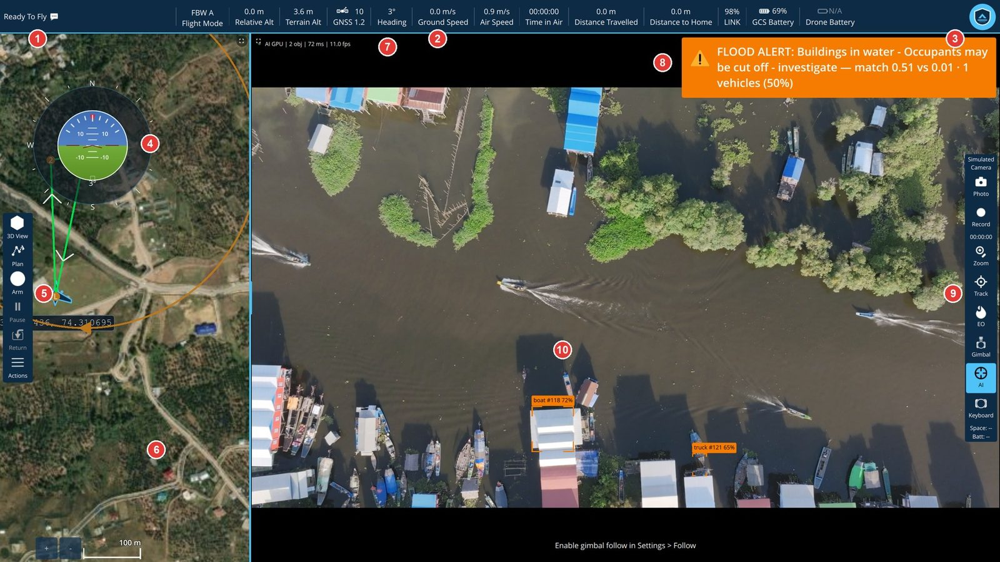
| Area | What it is for | |
|---|---|---|
| 1 | Status | Overall state of the aircraft, such as Ready To Fly or No Vehicle Connected. Click it for messages and sensor health. |
| 2 | Toolbar readouts | Flight mode, altitudes, GNSS, heading, speeds, time, distances, link and batteries. See 3.1. |
| 3 | Application menu | The round SkyShield badge. Opens settings and tools. See 2.3. |
| 4 | Compass and attitude | Heading ring and artificial horizon. Can be dragged anywhere, or switched off. |
| 5 | Action strip | 3D View, Plan, Arm, Pause, Return, Actions. |
| 6 | Map | The aircraft, its position, its mission and its home. Click the map for location actions. |
| 7 | AI status line | Whether detection is running, on which device, how many objects, and how fast. |
| 8 | Alert banner | The single most important thing the AI is currently reporting. |
| 9 | Camera panel | Photo, record, zoom, tracking, camera type, gimbal, AI on/off, keyboard control. |
| 10 | Video | The aircraft's camera, with detection boxes drawn over it. |
The map and the video share the screen side by side. Drag the divider between them to give either one more room (the map can take between a quarter and three quarters of the width). Double-click the video to make it fill the screen, and double-click again to return.
2.3 The application menu
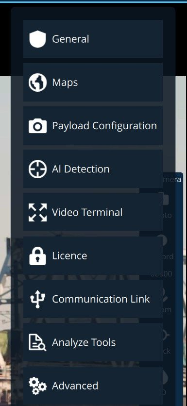
Click the round badge at the top right to open the menu. The rest of the screen dims, but the toolbar and action strip stay usable.
| Entry | Opens | Chapter |
|---|---|---|
| General | Everyday switches, units, updates, simulator, configuration file | 11.1 |
| Maps | Map provider and offline map areas | 11.2 |
| Payload Configuration | Video source and recording | 4 |
| AI Detection | Detection, alerts, voice, autonomous actions | 5 |
| Video Terminal | Sharing video with browsers | 9 |
| Licence | Licence status and device ID | 13 |
| Communication Link | How SkyShield connects to aircraft | 2.4 |
| Analyze Tools | Log download and diagnostics (shown only in Advanced Mode) | 10 |
| Advanced | Application Settings and Vehicle Configuration | 11.3, 12 |
Every page opened from the menu has a back arrow and the page title at the top left. Click it to return to where you were.
Advanced Mode. Hold Shift and click the version number at the bottom of the menu to turn Advanced Mode on or off. It reveals Analyze Tools and some rarely needed options.
2.4 Connecting an aircraft
SkyShield connects by itself to an aircraft that appears on a supported link. Plug in the telemetry radio or autopilot USB cable, or power the aircraft's data link, and wait for the status at the top left to change from No Vehicle Connected.
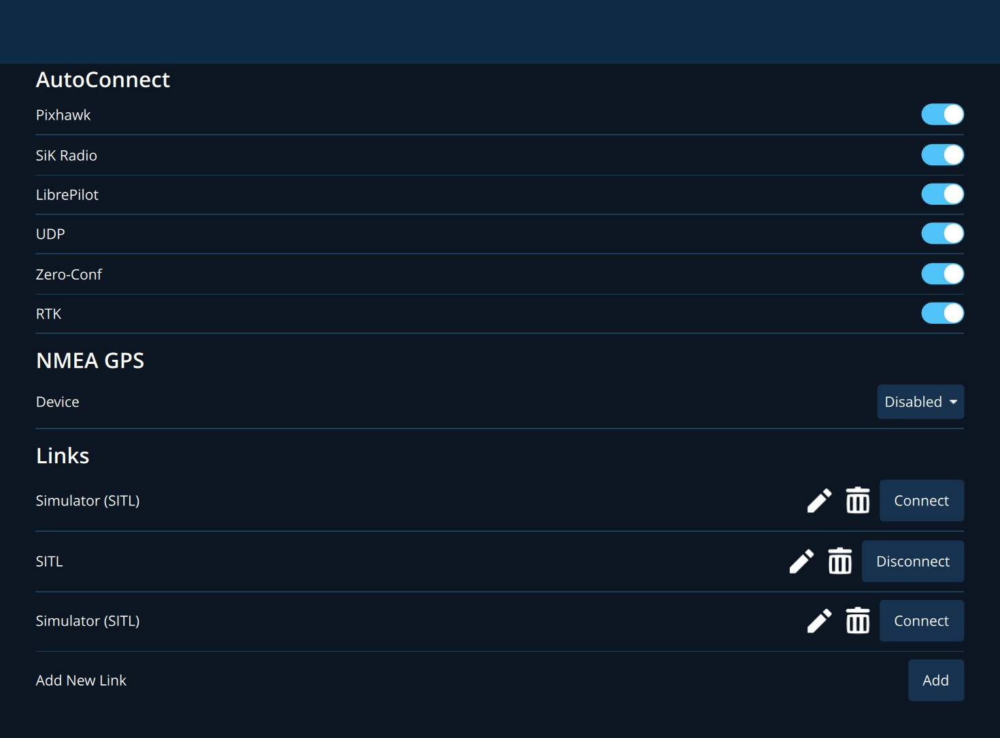
Open Communication Link from the application menu to control this.
| Section | What it does |
|---|---|
| AutoConnect | One switch per link type SkyShield will connect to without being asked: Pixhawk, SiK Radio, LibrePilot, UDP, Zero-Conf, RTK. Switch one off if a device is being connected to by mistake. |
| NMEA GPS | An optional GPS receiver attached to the ground station itself. |
| Links | Connections you have defined by hand. Each has edit and delete icons and a Connect or Disconnect button. |
| Add New Link | Add creates a serial, UDP, TCP or Bluetooth link, or a log replay link. |
The first time SkyShield loads an aircraft's parameters it shows a progress bar under the toolbar. Wait for it to finish before planning or arming.
Naming each aircraft
SkyShield names an aircraft from a number stored on its own autopilot: the parameter BRD_SERIAL_NUM. Set it once per airframe in Vehicle Configuration > Parameters, for example 7, and that aircraft is called Ravin 007 everywhere: in the aircraft panel, on its video tile, in the Remote Video Terminal and in its flight ids and reports (Ravin_007_2026-10-15_4). Give every aircraft a different number. While BRD_SERIAL_NUM is 0, the aircraft takes the ground station's own board number from General settings instead, which is fine for one aircraft but gives every aircraft the same name when several are connected.
2.5 Training without an aircraft
SkyShield can run a flight simulator on the ground station so that an operator can practise with nothing connected. The simulator behaves like a real aircraft in every screen of the application.
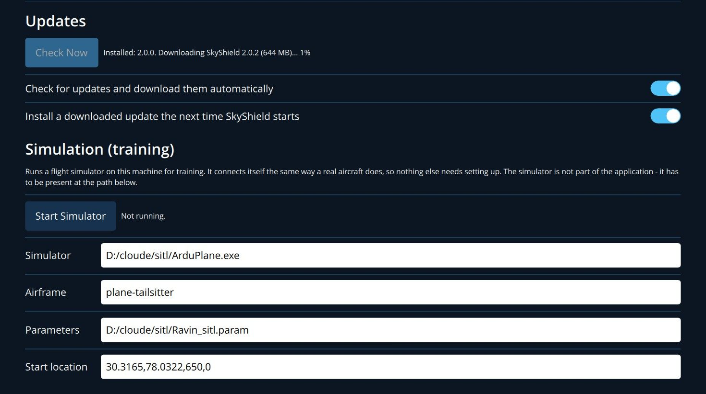
- Open the application menu and choose General. Scroll to Simulation (training).
- Click Start Simulator. After a few seconds the Fly View shows the simulated aircraft.
- When you have finished, return to the same page and click Stop Simulator.
| Field | Meaning |
|---|---|
| Simulator | Location of the simulator program on this computer. The simulator is not part of SkyShield. If it is not at this location the button is disabled and the status says so. |
| Airframe | The type of aircraft simulated. |
| Parameters | A parameter file loaded into the simulated aircraft. |
| Start location | Latitude, longitude, altitude in metres and heading, separated by commas. |
The four fields can only be edited while the simulator is stopped. The simulator appears in Communication Link as Simulator (SITL) and can be disconnected there like any other aircraft.
To practise with video and AI as well, play a recorded video file in place of a camera. See 4.2.
3. Fly View
3.1 Toolbar readouts
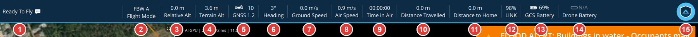
| Readout | Meaning | |
|---|---|---|
| 1 | Status | Overall aircraft state. Click for the Arm button, vehicle messages and sensor health. |
| 2 | Flight Mode | The mode the autopilot is in. Click to change it. |
| 3 | Relative Alt | Height above the home (take-off) point. |
| 4 | Terrain Alt | Height above the ground directly below the aircraft. |
| 5 | GNSS | Number of satellites and horizontal accuracy (HDOP; lower is better). Click for detail. |
| 6 | Heading | Compass direction the aircraft is pointing, in degrees. |
| 7 | Ground Speed | Speed over the ground. |
| 8 | Air Speed | Speed through the air. |
| 9 | Time in Air | Time since take-off, as hours:minutes:seconds. |
| 10 | Distance Travelled | Total distance flown this flight. |
| 11 | Distance to Home | Straight-line distance back to the home point. |
| 12 | LINK | Percentage of telemetry packets arriving. Click for radio detail. |
| 13 | GCS Battery | The battery of this computer, not the aircraft. |
| 14 | Drone Battery | The aircraft's battery. Shows N/A until the aircraft reports one. |
| 15 | Application menu | See 2.3. |
Readouts never disappear. When a value is not available yet, its place shows -- or N/A, so the toolbar always has the same layout.
Flashing readouts. You can make a readout flash red when it crosses a limit, for example when relative altitude falls below a height or when distance to home exceeds a range. Set the limits in Advanced > Application Settings > Fly View > Telemetry Alerts (11.3).
3.2 Status, flight mode and other drop-downs
Click a readout to open its panel. Click anywhere else, or press Esc, to close it.
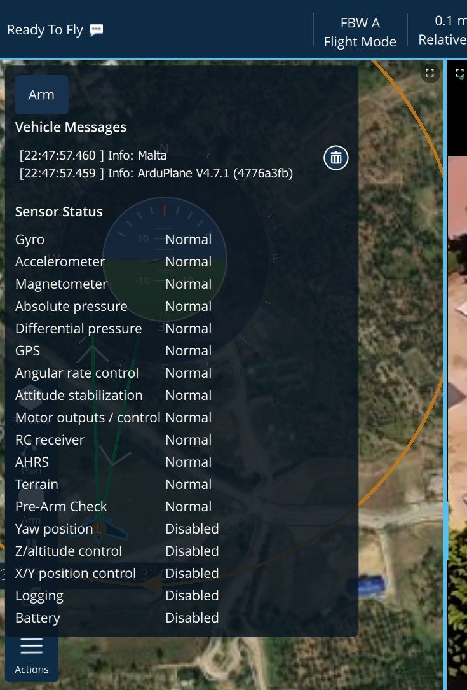
The status panel lists recent messages from the aircraft and the state of each sensor (Normal, Disabled or an error). If the aircraft will not arm, look here first: the reason is normally in the messages.
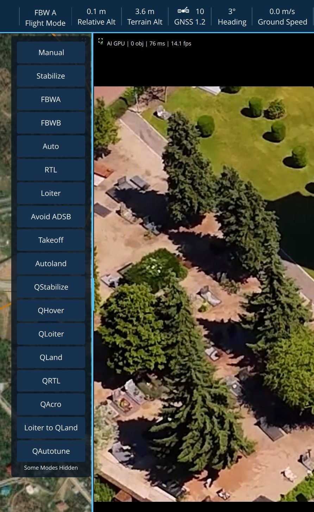
The flight mode list shows every mode the aircraft supports. Click one to command it.
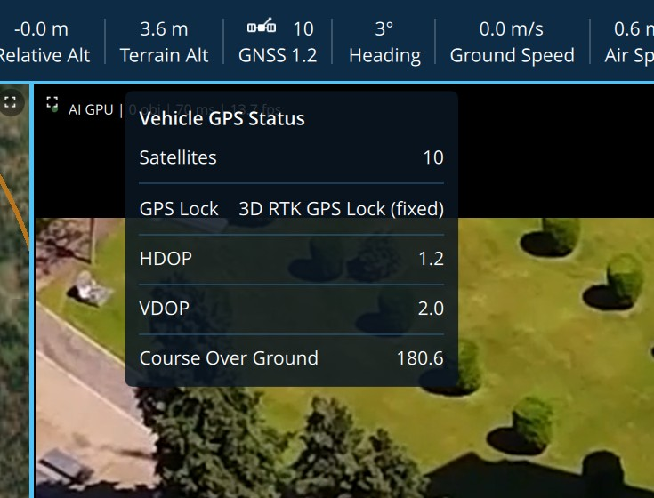
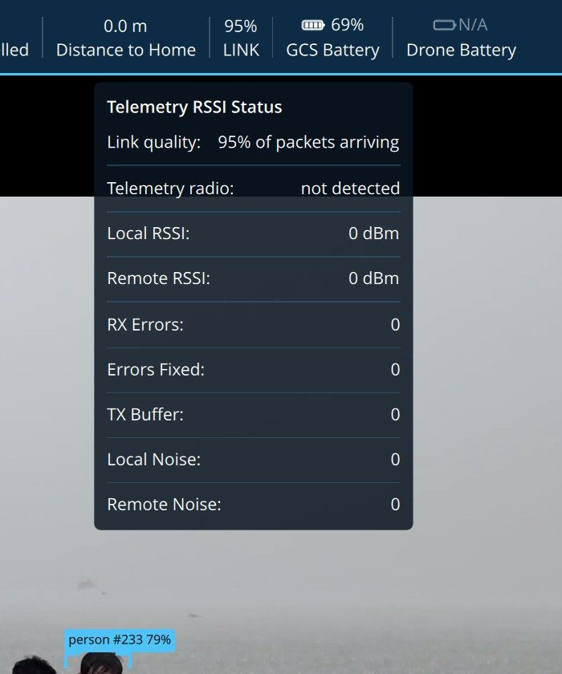
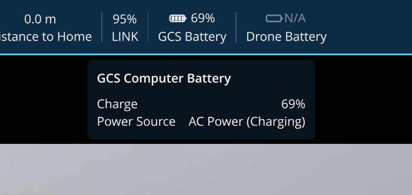
3.3 Compass and attitude display
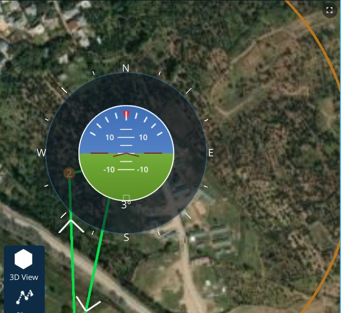
The outer ring is a compass with the aircraft's heading shown beneath it. The centre is an artificial horizon showing pitch and roll. Drag the display to move it. It floats over the map or the video. Switch it on or off with General > Show compass and HUD.
3.4 Action strip and confirmations
| Button | What it does |
|---|---|
| 3D View | Switches the map to a three-dimensional view (chapter 8). Disabled until Show 3D view is on in General settings. |
| Plan | Opens Plan View (chapter 7). |
| Arm / Disarm | Arms the aircraft so that its motors can run, or disarms it. The button shows whichever applies. |
| Pause | Holds the aircraft where it is, interrupting a mission. |
| Return | Commands the aircraft to return to its home point. |
| Actions | Opens further actions that apply right now, such as Start Mission, Change Altitude or Continue Mission. |
Buttons that cannot be used at the moment are greyed out, not hidden.
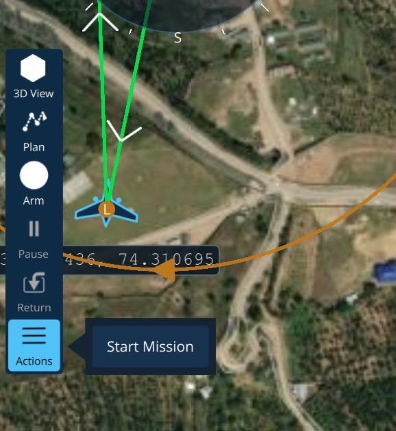
Confirming an action
Every action that affects the aircraft shows a confirmation at the top of the screen that says what will happen.
- To go ahead, drag the round handle to the right, or hold the Space bar.
- To cancel, click the X.
3.5 Working on the map
- Move and zoom: drag the map, use the mouse wheel, or use the + and - buttons at the bottom left. The scale bar is beside them.
- The aircraft is drawn as an arrow pointing where it is heading. Its latitude and longitude are printed beside it to six decimal places.
- The mission is drawn as lines between numbered waypoints. The home point is marked.
Click a point on the map to open a panel of actions for that location:
| Action | Available | What it does |
|---|---|---|
| Go to location | In flight | Flies the aircraft to the point. Asks for confirmation. |
| Orbit at location | In flight, if the aircraft supports it | Circles the point. |
| ROI at location | If the aircraft supports it | Points the camera at the location and keeps it there. Cancel ROI releases it. |
| Mark location | Always | Drops a marker on the map for your own reference. |
| Set home | Disarmed only | Moves the aircraft's home point to the location. |
| Calibrate gyro | Disarmed only | Runs the gyro calibration. Keep the aircraft still. |
| Calibrate airspeed & baro | Disarmed only | Zeroes the airspeed sensor and barometer. Shield the pitot tube from wind. |
The panel also shows the latitude and longitude of the point clicked. Go to location is limited to the distance set in Application Settings > Fly View > Go To Location Max Distance (1000 m unless changed).
3.6 Changing altitude in flight
Choose Actions > Change Altitude. A box opens with the cursor already in it. Type the new altitude and confirm. Before you confirm, the box states the change in words, for example a climb or descent from the current altitude to the new one and by how much, and it shows the permitted range. Cancel leaves the aircraft as it is. After the command is sent, the Fly View shows the altitude the aircraft reports it is heading for, so you can see that it accepted the value.
3.7 Pre-flight checks
SkyShield can show a checklist before arming. Turn it on with Application Settings > Fly View > Use Preflight Checklist. With Enforce Preflight Checklist also on, the aircraft cannot be armed from SkyShield until every item passes.
The checklist covers battery, GNSS, radio control, sensor health and sound output. For fixed-wing aircraft it also checks terrain following and tells you which of these applies:
- Terrain following is on.
- It is on in some flight modes only.
- It is off, and the aircraft's terrain database is disabled.
- It is off: the aircraft would hold height above home, not above the ground.
3.8 Flying several aircraft
When more than one aircraft is connected, the Aircraft panel appears over the Fly View. It shows every aircraft at once and sends commands to several of them together.
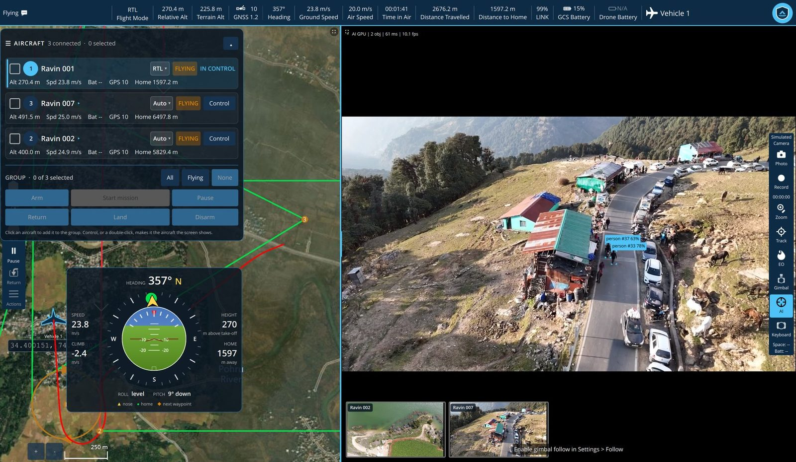
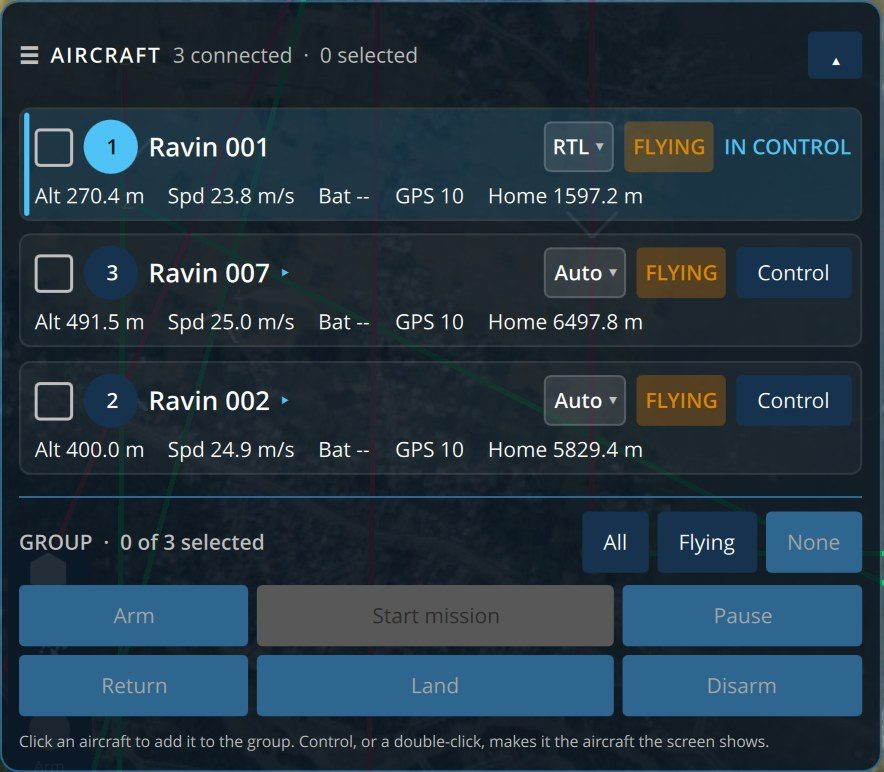
| Item | What it does |
|---|---|
| Title bar | How many aircraft are connected and selected. Drag it to move the panel anywhere on the screen. The arrow button, or a double-click, folds the panel down to its title bar. |
| Tick box | Selects the aircraft for the group actions. Clicking anywhere on its card does the same. |
| Number and name | The aircraft's MAVLink id in the badge and its name (2.4). The aircraft the rest of the screen is showing has a blue badge and a blue bar on the left of its card. |
| Flight mode | Click it for that aircraft's modes and choose one. It changes only that aircraft, whichever are selected, and it acts at once, as the flight mode menu in the toolbar does. |
| State | DISARMED, ARMED or FLYING. |
| Control / IN CONTROL | Control (or a double-click on the card) makes that aircraft the one the toolbar, instruments, actions and main video show. |
| Figures | Height above take-off, ground speed, battery, GPS satellites and distance from home. Battery turns orange below 35% and red below 20%; GPS turns orange without a 3D fix. A card with a red border and LINK LOST has stopped hearing from its aircraft. |
| All / Flying / None | Selects every aircraft, only those in the air, or none. |
| Arm, Start mission, Pause, Return, Land, Disarm | Act on every selected aircraft at once. Each asks for the slide-to-confirm first. A button is greyed out when it applies to none of the selected aircraft, for example Return when none of them is flying. |
- Give each aircraft its own MAVLink id (1, 2, 3...) and its own BRD_SERIAL_NUM before the flight.
- Upload each aircraft's mission: make it the active one with Control, then use Plan View as for a single aircraft.
- Select the aircraft that should fly, then Arm and Start mission, confirming each.
- Watch them on the map and in the panel. To work with one, press its Control.
- To bring a group home, select it and press Return.
4. Video and the camera panel
4.1 Choosing the video source
Open Payload Configuration from the application menu.
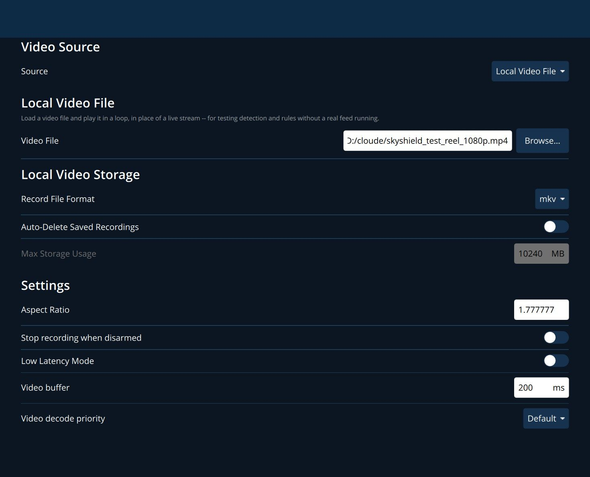
| Setting | Meaning |
|---|---|
| Source | Where video comes from: an RTSP stream, UDP H.264, UDP H.265, TCP, MPEG-TS, a preset for a known device, Local Video File, or disabled. If the aircraft announces its camera stream itself, the source is set automatically and this section is locked. |
| RTSP URL / TCP URL / UDP URL | The address of the stream. Only the field for the chosen source is shown. |
| Video File | For Local Video File: the file to play. Browse… selects one. |
| Record File Format | Format of recordings you make: mkv, mov or mp4. |
| Auto-Delete Saved Recordings | Deletes the oldest recordings when the total passes Max Storage Usage. |
| Aspect Ratio | Shape of the picture, width divided by height. 1.777777 is 16:9. |
| Stop recording when disarmed | Ends a recording automatically when the aircraft disarms. |
| Low Latency Mode | Shows frames as soon as they arrive. Less delay, at the cost of a less smooth picture on a poor link. |
| Video buffer | How long video is held before it is shown, in milliseconds (200 unless changed). A larger buffer smooths a bad link. |
| Video decode priority | Which decoder to prefer. Leave on Default unless advised otherwise. |
4.2 Playing a recorded video file
Set Source to Local Video File and choose a file (mp4, mov, mkv, avi, ts, webm or m4v). The file plays in the Fly View exactly as a live camera would, including AI detection and alerts, and starts again when it reaches the end. Use this for training, for demonstrations, and to see how the AI responds to footage of your own.
4.3 Video from several aircraft
With several aircraft, each can have its own camera on screen at the same time.
- Give each aircraft's camera its own network address. Cameras of the same model usually come with the same address; change it with the camera maker's tool.
- Open Payload Configuration. Under Video per aircraft there is a row for every connected aircraft. Enter each camera's RTSP address, for example rtsp://192.168.2.120:8554/eo.
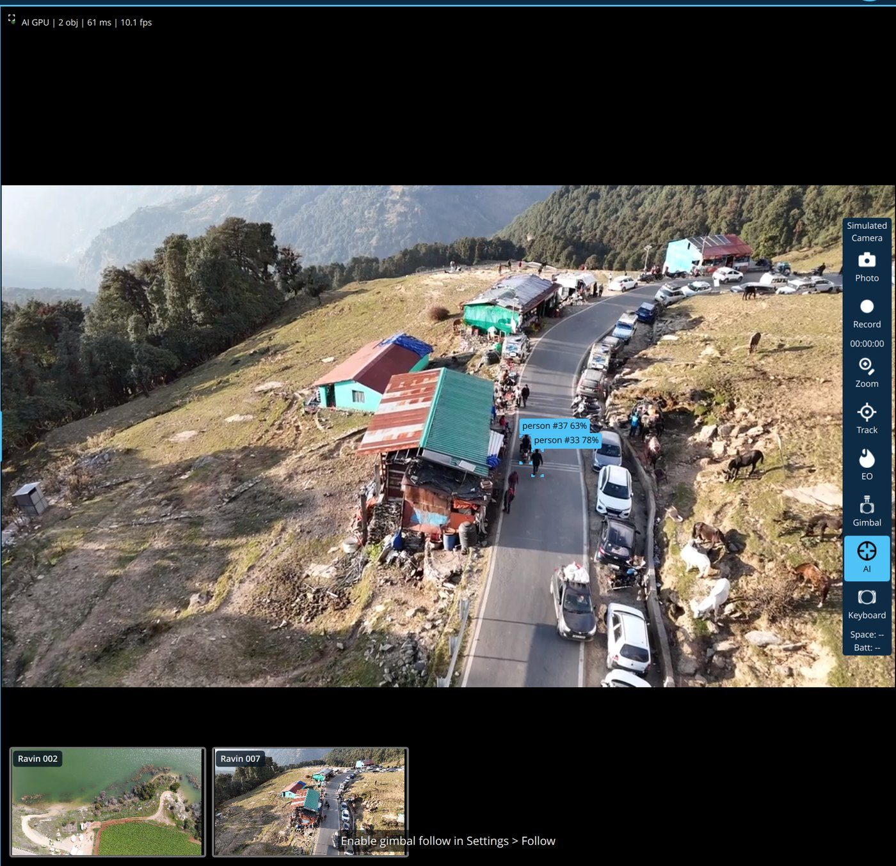
- The main picture shows the camera of the aircraft that is in control. The AI detection runs on this picture.
- Up to three other aircraft each play live in a tile at the bottom of the video. Click a tile to put that aircraft in control; its camera moves to the main picture.
- A label at the top says whose camera the main picture is. It turns orange if the aircraft in control has no camera address and an earlier aircraft's camera is still showing.
- Each extra camera is a separate video stream to receive and decode. All of them share the video radio link, so check that the link can carry them.
4.4 The camera panel
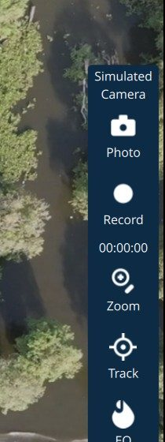
| Control | What it does |
|---|---|
| Camera name | The camera in use, or No Camera. |
| Photo | Takes a still picture. |
| Record | Starts and stops a video recording. The counter beneath shows the length of the recording. |
| Zoom | Opens - and + buttons beside the panel to zoom out and in. |
| Track | Lets you draw a box on the video around something to follow. See chapter 6. |
| EO | Switches the camera between daylight (EO), thermal (IR) and the mixed modes the camera offers (IR PiP, IR Mix). Greyed out when the camera has no thermal sensor. |
| Gimbal | Opens the gimbal controls (below). |
| AI | Turns AI detection on or off for this session. Highlighted when on. |
| Keyboard | Turns keyboard control of radio channels on or off. See 11.3. |
| Space / Batt | Free storage and battery of the camera, when it reports them. |
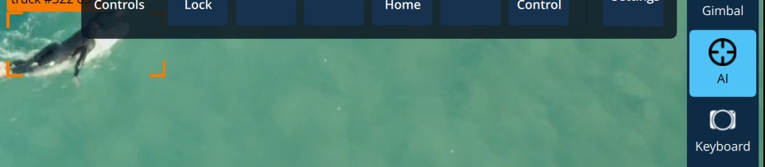
| Gimbal control | What it does |
|---|---|
| Yaw Lock | Holds the camera on a compass direction while the aircraft turns, or releases it to follow the aircraft's nose. |
| Center | Points the camera straight ahead. |
| Tilt 90 | Points the camera straight down. |
| Point Home | Points the camera at the home point. |
| Retract | Stows the gimbal. |
| Acquire Control | Takes control of the gimbal for this ground station when more than one controller is present. |
| Settings | Gimbal options, including on-screen control: click or drag on the video to aim the camera. |
Camera and gimbal controls normally appear only when the aircraft reports that hardware. Turn on General > Show all camera and gimbal controls (no MAVLink needed) to show them all the time, for example to learn where they are. A press still only acts on real hardware.
5. AI detection and alerts
SkyShield examines the video on the ground station itself. Nothing is sent to the internet and no network is needed. It does two separate things:
- Object detection finds people, vehicles, boats, aircraft and animals, draws a box on each, and follows each one from frame to frame.
- Scene assessment judges what is happening in the picture as a whole, such as fire, flooding or a damaged building, and raises an alert.
5.1 What you see on the video
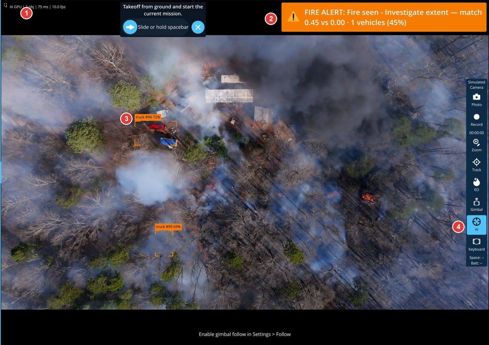
| Item | Meaning | |
|---|---|---|
| 1 | AI status line | A green dot means detection is running. GPU or CPU is the device doing the work. Then the number of objects in view, the time taken per frame in milliseconds, and frames examined per second. |
| 2 | Alert banner | The alert that currently matters most. See 5.2. |
| 3 | Detection box | Corner brackets around an object, so the object itself stays visible. The label gives the type, a track number and a confidence percentage, for example truck #96 72%. |
| 4 | AI button | Turns detection on and off for this session. |
The track number stays with an object for as long as it is followed. If the same number is still on a vehicle a minute later, it is the same vehicle. Boxes are blue normally and orange while an alert is active.
5.2 Alerts
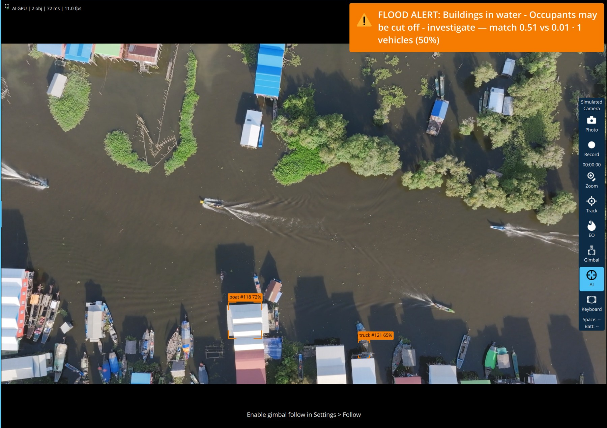
An alert banner reads, in order:
- Category, such as FIRE ALERT, FLOOD ALERT or PEOPLE ALERT.
- What was seen, such as Buildings in water.
- What to do about it, such as Occupants may be cut off - investigate.
- The evidence: match 0.51 vs 0.01 compares how strongly the picture matches the alert with how strongly it matches the things most often mistaken for it. A wide gap is a strong alert. Then the number of people or vehicles counted in the affected area, and a confidence percentage.
How alerts behave:
- One alert at a time. A burning building could be described as fire, smoke and a building on fire all at once. SkyShield shows the most serious and treats the others as supporting detail.
- Alerts that name an object need that object. Person in water is raised only when the detector has also found a person.
- Alerts about movement need movement. Person not moving or Vehicle convoy are decided from how tracked objects move relative to the rest of the scene.
- Spoken alerts. Alerts are read aloud by a voice that runs on this computer. The same kind of alert is not repeated until the Minimum gap between announcements has passed.
- While an alert is up, boxes are drawn only for objects inside the affected area, so that you can see what is in it.
Appendix A lists every alert with its severity.
5.3 AI Detection settings
Open AI Detection from the application menu.
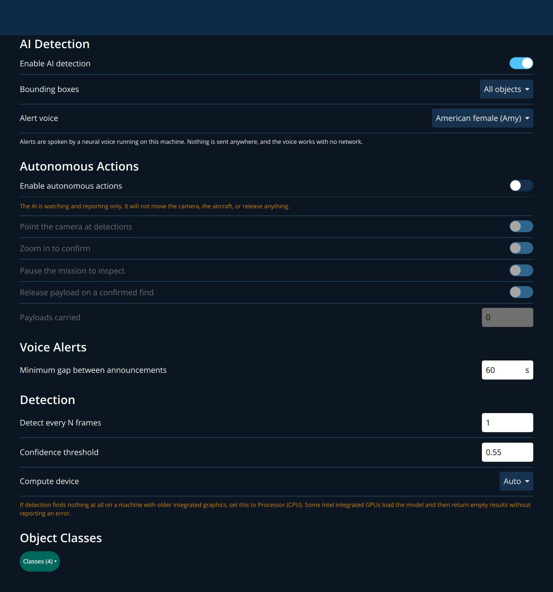
| Setting | Meaning | Default |
|---|---|---|
| Enable AI detection | Master switch. When off, the AI button in the Fly View cannot turn detection on. | Off |
| Bounding boxes | All objects; Only critical objects (boxes appear only inside the area of an active alert); or Hidden. Hiding boxes does not stop detection or alerts. | All objects |
| Alert voice | British male (Alan), American neutral (Lessac) or American female (Amy). | British male |
| Minimum gap between announcements | Seconds between spoken alerts, from 3 to 300. | 60 s |
| Detect every N frames | 1 examines every frame. A higher number (up to 10) examines fewer frames and eases the load on a slower computer. | 1 |
| Confidence threshold | How sure the detector must be before it draws a box, from 0.05 to 0.95. Lower finds more and makes more mistakes. | 0.5 |
| Compute device | Auto, Graphics card (GPU) or Processor (CPU). | Auto |
| Classes | Which kinds of object to detect. | See below |
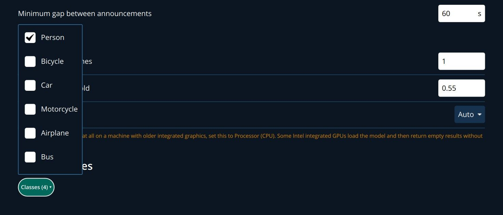
Object classes. Click the Classes pill and tick the kinds of object you want. The choices are person, bicycle, car, motorcycle, airplane, bus, train, truck, boat, bird, cat, dog, horse, sheep, cow, elephant, bear, zebra and giraffe. Until you change anything, people, vehicles and boats are detected and animals are not, because animal detections from the air are mostly wrong.
5.4 Autonomous actions
By default the AI only watches and reports. The Autonomous Actions section lets you permit it to act, one kind of action at a time.
| Permission | What the AI may do |
|---|---|
| Enable autonomous actions | Master switch for the four below. While off, the page states that the AI will not move the camera, the aircraft, or release anything. |
| Point the camera at detections | Aim the gimbal at something it has found. |
| Zoom in to confirm | Zoom the camera for a closer look. |
| Pause the mission to inspect | Hold the aircraft while it looks. |
| Release payload on a confirmed find | Drop a carried payload. Set Payloads carried to the number on board (0 to 16). |
All are off unless you turn them on. Detection, alerts and logging continue whatever these switches say.
5.5 Records
SkyShield keeps AI logs in an AILogs folder in its data folder. They include the score of every alert on every pass, whether or not it was raised. These files are useful when reviewing a flight and when reporting a missed or false alert to support.
6. Visual tracking and gimbal follow
Visual tracking follows anything you point out on the video. It does not depend on AI detection and does not need the object to be of a known type.
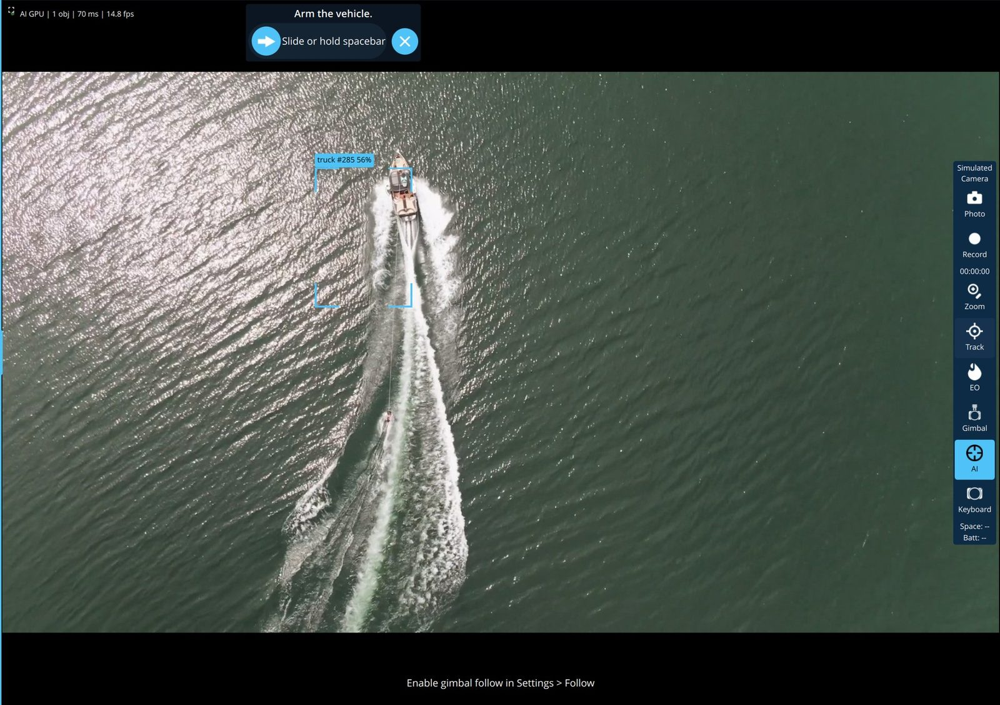
- Click Track in the camera panel. The video shows Drag on the video to select a target.
- Drag a box tightly around the target.
- SkyShield follows that patch of the picture and draws the box as it moves.
- Click Track again to stop.
6.1 Making the gimbal follow the target
Tracking alone only draws a box. Gimbal follow moves the camera to keep the target centred, by sending radio-channel commands to the gimbal. It is set up once, in Advanced > Application Settings > Follow.
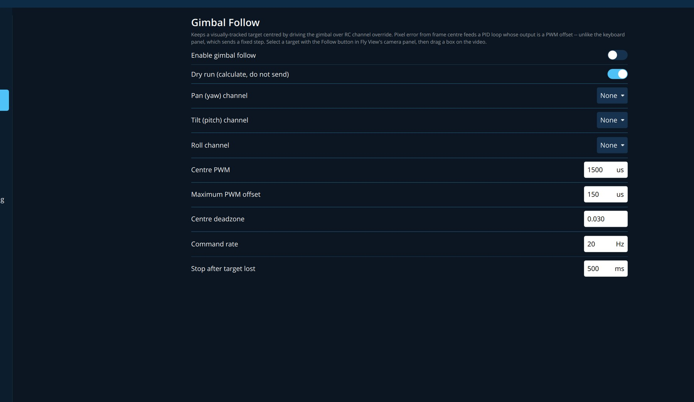
| Setting | Meaning | Default |
|---|---|---|
| Enable gimbal follow | Allows follow to be used. Until it is on, the Fly View reminds you: Enable gimbal follow in Settings > Follow. | Off |
| Dry run (calculate, do not send) | Works out the commands and shows them, but sends nothing. Use this to check direction before letting it move the gimbal. | On |
| Pan (yaw) channel, Tilt (pitch) channel, Roll channel | The radio channel that drives each gimbal axis. Channels 1 to 4 are marked (flight) because they normally fly the aircraft. | None |
| Centre PWM | The signal that means "do not move". | 1500 us |
| Maximum PWM offset | The largest correction that will ever be sent. | 150 us |
| Centre deadzone | How far off centre the target may drift before the gimbal is moved. | 0.03 |
| Command rate | Commands per second. | 20 Hz |
| Stop after target lost | How long after losing the target the gimbal is released. | 500 ms |
With follow enabled, further options set the response of each axis (gains and inversion). The roll axis is for gimbals mounted sideways. Its gains start at zero so that it does nothing until you set it up.
7. Plan View
Plan View is where you build a mission: the route the aircraft flies by itself. Open it with Plan in the action strip.
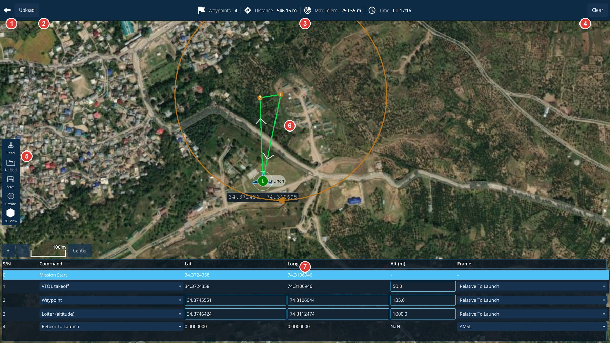
| Area | What it is for | |
|---|---|---|
| 1 | Back | Returns to the Fly View. |
| 2 | Upload | Sends the plan to the aircraft. Highlighted when the plan on screen differs from the one on the aircraft. |
| 3 | Mission summary | Waypoints, total Distance, Max Telem (the farthest the route goes from home), and estimated Time. |
| 4 | Clear | Removes the plan from the screen and from the aircraft. Asks first. |
| 5 | Tools | Read loads the plan from the aircraft. Upload sends it. Save stores it as a file. Create starts a new plan. 3D View previews the plan in three dimensions. |
| 6 | Map | The route. Click to add waypoints and drag a waypoint to move it. |
| 7 | Mission table | Every step of the mission, one per row. |
7.1 Creating a plan
- Click Create. If a plan is already on screen you are asked whether to replace it.
- Answer How should altitude be measured? Choose Terrain to keep the same height above the ground below the aircraft, or Relative to Launch to hold a fixed height above the take-off point.
- Enter the altitude new waypoints should fly at, and click Start.
- Click on the map where you want the aircraft to fly. Each click adds a waypoint. Undo removes the last one.
- Click Done.
The Create panel also offers Pattern tools such as a survey over an area, and layers for a Fence (an area the aircraft must stay inside) and Safe Landing points. An area can be traced on the map or loaded from a KML or shapefile.
Two tools build a route for you:
- Auto Plan covers the geofence, an existing survey area, or a square around the centre of the map, in that order of preference. Altitude and sweep direction are worked out for you.
- Route To builds a route from the aircraft (or from the planned home when no aircraft is connected) to a point you click. Altitude and speed are chosen for you.
A route built this way is shown as a proposal. Click Use as Mission to accept it or Dismiss to discard it.
7.2 Editing in the mission table
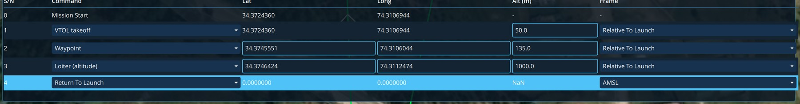
| Column | Meaning |
|---|---|
| S/N | Order of the step. Row 0 is the mission start. |
| Command | What the aircraft does at this step, chosen from a drop-down: take-off, waypoint, loiter, return to launch, land and others. |
| Lat, Long | Position. Type a value directly into the cell. |
| Alt (m) | Altitude for the step. |
| Frame | What the altitude is measured from, for example Relative To Launch or AMSL (above mean sea level). |
Click a row to select it. The selected step is highlighted on the map, and any extra values that the command needs can be edited for that row. Center, above the table, brings the mission into the middle of the map.
7.3 Terrain check
The route is drawn green where it is clear and red where it would hit the ground. SkyShield checks the whole path between waypoints against terrain height, not only the waypoints themselves, so a line that clips a hill between two safe waypoints is caught. Fix every red section before uploading: raise the altitude, move the waypoint, or switch the plan to terrain-relative altitude. The Fly View map draws the aircraft's mission with the same check, so a red leg is red in flight too.
7.4 Uploading and flying
- Click Upload and wait for Done.
- Return to the Fly View. The mission is drawn on the map.
- Choose Actions > Start Mission and confirm.
You can plan while the aircraft is flying. A plan started in the air does not need a take-off step.
8. 3D view
The 3D view replaces the flat map with a three-dimensional globe showing real terrain, the aircraft and its path.
- Turn on General > Show 3D view. This is needed once.
- In the Fly View or Plan View, click 3D View. Click it again to return to the flat map.
8.1 In the Fly View
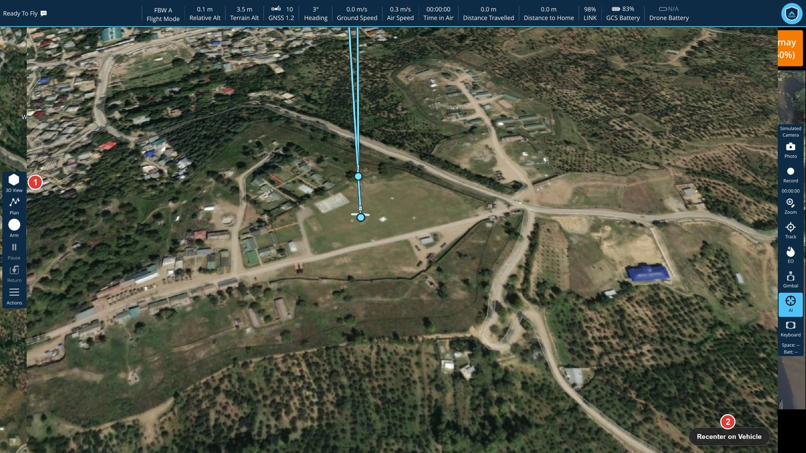
| Item | What it is for | |
|---|---|---|
| 1 | 3D View | Switches between the 3D view and the flat map with video. |
| 2 | View controls | Buttons to choose how the camera behaves and to move, turn, tilt and zoom the view (see 8.3). |
The 3D view fills the map area of the Fly View and is never drawn over the video. The toolbar, action strip and camera panel stay in place, so every flight control remains available. Heading, speed, climb, height and distance from home are printed in the top left corner of the view, in the units chosen in settings.
In the view you will see:
- The aircraft, outlined in yellow so it can be found from a distance, with a thin white line straight down to the ground and its height above the ground beneath it. This is the real clearance over the terrain, not the height above take-off.
- Home, as a green point marked HOME, joined to the aircraft by a dashed green line.
- The mission, as numbered points at their real heights. Each point shows its height above the ground under it, and the point the aircraft is flying to is larger and yellow.
- AI alerts, as orange labels at the place the aircraft was when each alert was raised.
- A north arrow in the top right corner and a scale bar in the bottom left. Click the north arrow to turn the view north-up.
Each leg of the mission is coloured by how far it clears the ground:
| Colour | Meaning |
|---|---|
| Green | The leg clears the ground by 30 m or more along its whole length. |
| Amber | The leg comes within 30 m of the ground. |
| Red | The leg passes through the ground. |
| Grey | Terrain is not available for part of the leg, so nothing is claimed about it. |
8.2 In Plan View
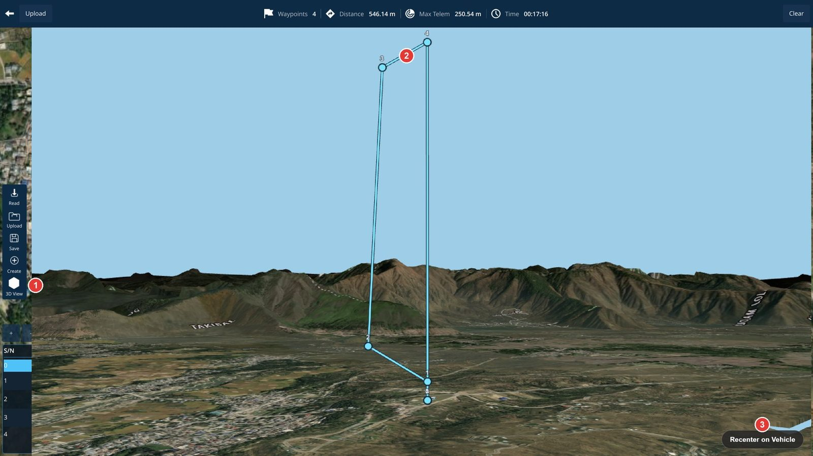
| Item | What it is for | |
|---|---|---|
| 1 | 3D View | Switches between the 3D preview and the flat planning map. |
| 2 | Mission path | Each numbered point is a step of the mission, drawn at its planned altitude above the terrain. |
| 3 | View controls | Move, turn, tilt and zoom the preview (see 8.3). |
The mission is previewed over the terrain, even with no aircraft connected. This is the quickest way to see whether a route clears a ridge, and how high a step really is compared with the ground around it. The mission table is reduced to its row numbers while the preview is open. Click 3D View again to edit the plan.
Terrain is shown at about 30 m resolution for the area in view.
8.3 Moving the view
The view controls are in the bottom right corner. Hide folds them away to a single Controls button; they start folded when the map area is narrow.
| Button | What it does |
|---|---|
| Follow | The camera stays behind the aircraft and turns with it. This is how the view opens. |
| Top | Looks straight down on the aircraft with north at the top, like the flat map but with real terrain. |
| Orbit | The camera circles slowly round the aircraft. |
| Free | The view stays where you put it and the aircraft flies through it. |
| Home | Moves the view to the home position. |
| ▲ ▼ ◀ ▶ | Move the view forward, back, left and right over the ground. |
| ⟲ ⟳ | Turn the view left and right about the middle of the screen. |
| Tilt ▲ / Tilt ▼ | Look more towards the horizon, or more straight down. |
| + / − | Zoom in and out. |
| N up | Turns the view so north is at the top. |
| Quality | Switches between Low, Medium and High picture quality. Lower is smoother on a less powerful computer. The view lowers the quality once by itself if it is running slowly. |
Hold a button down to keep moving. Zooming keeps the current camera mode; moving, turning or tilting switches to Free, as does dragging the view with the mouse or a finger. Click Follow to return to the aircraft. With the mouse, drag to move, hold the wheel down (or Ctrl) and drag to turn and tilt, and roll the wheel to zoom.
8.4 Without an internet connection
The 3D view works with no internet connection. Map imagery and terrain that have already been viewed or downloaded are used from the computer. Before going to a site with no internet, download the area in Offline Maps with Fetch elevation data ticked, so that both the imagery and the terrain are stored. Where terrain is not stored the ground is drawn flat and the view says so; mission legs over it are shown grey.
9. Remote Video Terminal
The Remote Video Terminal lets other people watch the aircraft's video on a phone, tablet or laptop by opening a web page. There is nothing to install on their device. The aircraft is not involved: the ground station shares a copy of the video it is already receiving. Viewers can only watch. They cannot command the aircraft.
9.1 Turning it on
Open Video Terminal from the application menu.
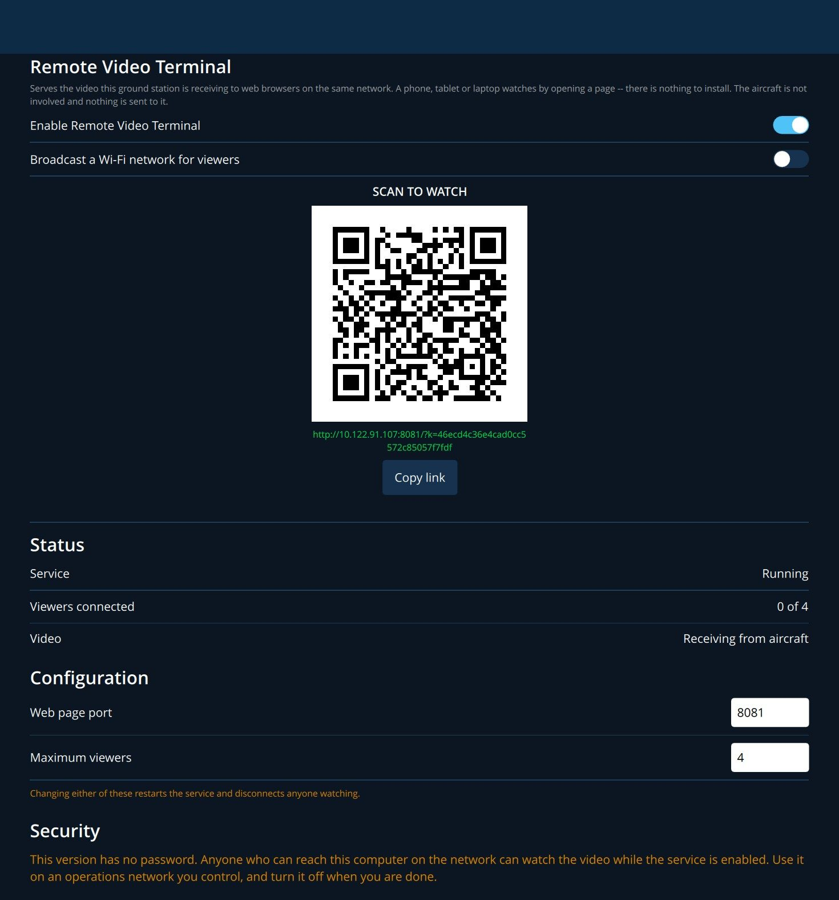
- Turn on Enable Remote Video Terminal.
- Decide how viewers will reach the ground station (9.2).
- Have each viewer scan the code, or send them the link with Copy link.
| Item | Meaning |
|---|---|
| Service | Running when the page is being served. |
| Viewers connected | How many people are watching, out of the maximum allowed. |
| Video | Receiving from aircraft, or No video yet. The second is normal before the aircraft's camera starts. |
| Viewer list | One line per connected browser: its address, the camera it is watching and its link quality (good, weak or poor, with picture size, frames per second and data rate) as that browser measures it. Remove disconnects that viewer and keeps its address out until the service is next turned on. |
| Station name | The name viewers see for this ground station. Left empty, the computer's name is used. |
| Web page port | The network port of the page (8081 unless changed). The next port up is also used. |
| Maximum viewers | From 1 to 16 (4 unless changed). Further viewers are refused with a reason. |
| Keep the same viewer link | Off: the link gets a new access key every time the service starts. On: the same link works every time, for a base screen or a saved link. New key replaces it and disconnects everyone. |
Changing the port or the viewer limit restarts the service and disconnects everyone watching.
9.2 Three ways for viewers to connect
The ground station's own Wi-Fi network
Use this when there is no network on site. Turn on Broadcast a Wi-Fi network for viewers. Two codes appear:
- 1. JOIN — the viewer scans this first and their phone offers to join the network. The network name and password are printed beneath it.
- 2. WATCH — the viewer scans this second and the video page opens.
The order matters: a phone cannot open the page until it has joined the network.
An existing network
If the viewers are already on the same wired or wireless network as the ground station, leave broadcasting off. One code appears, SCAN TO WATCH. If the ground station has more than one network address, the others are listed so that you can give a viewer the one they can reach.
From another site, over a VPN
Put the ground station and the remote viewers on the same private network (VPN), then send them the link with Copy link. Start the VPN before enabling the Video Terminal, or turn the Video Terminal off and on again afterwards.
9.3 What a viewer sees
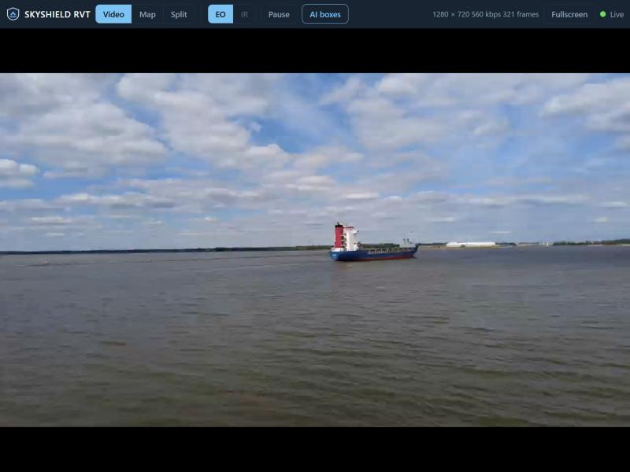
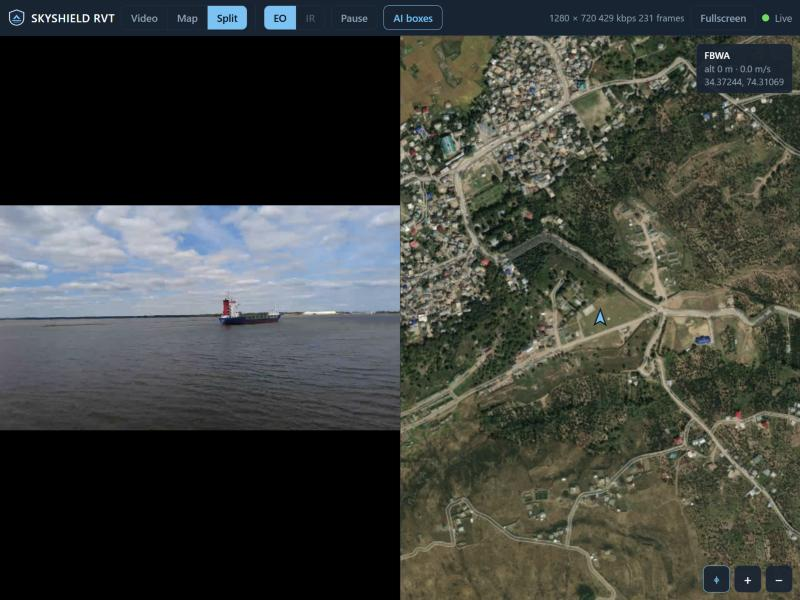
| Control | What it does |
|---|---|
| Video / Map / Split | Shows the video, the map, or both side by side. |
| EO / IR | Chooses the daylight or thermal camera. A camera that is not being received is greyed out. |
| Aircraft buttons | With several aircraft (4.3), one button per other aircraft's camera, named after the aircraft. |
| Pause | Freezes the picture to study it. Alerts still arrive while paused. Resuming jumps to live. |
| AI boxes | Shows or hides detection boxes. |
| Fullscreen | Fills the screen. |
| Status | Link quality first (Good, Weak or Poor link), then picture size, frames per second and data rate, and Live when connected. If the picture stops, for example while a camera restarts, the page reconnects by itself. |
The map shows the aircraft pointing the way it is heading (green when armed), its recent track, flight mode, altitude, ground speed and position. Buttons at the bottom right follow the aircraft and zoom. Alerts appear as a banner in the same colours as on the ground station.
Each viewer's choices affect only their own screen. The map shows the areas the operator has already viewed on the ground station. Other areas appear as blank squares when the ground station has no internet connection.
9.4 Security
- The link contains an access key. Normally it is created fresh each time the service starts, and a link from an earlier session does not work. With Keep the same viewer link on, the same link keeps working until you press New key; anyone who has it can watch while the service is on.
- The connection is not encrypted by SkyShield. It relies on the network underneath: the Wi-Fi password, your own network, or the VPN.
- Do not expose the ground station directly to the internet.
- Turn the Video Terminal off when you have finished.
10. Flight replay and Analyze Tools
10.1 Replaying a flight
SkyShield records the telemetry of every flight, and the video when you record it, in a folder named for that flight.
- Turn on General > Show Flight Replay Bar. A bar appears along the bottom of the window.
- Choose the flight from the list. Flights are named by aircraft, flight number and date. Browse... opens a log file directly.
- Press play. The telemetry replays in the Fly View as if the aircraft were connected, and the recorded video starts with it.
- Click Close when finished.
Dragging the slider moves the telemetry only. The video does not jump with it. Older logs recorded before flights had their own folders are listed without a flight number.
10.2 Analyze Tools
Shown in the application menu when Advanced Mode is on (2.3).
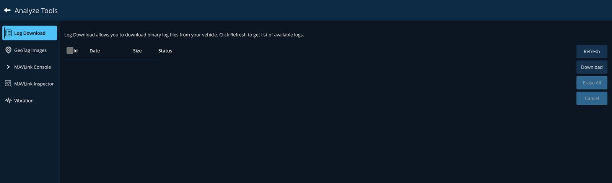
| Page | What it is for |
|---|---|
| Log Download | Lists the flight logs stored on the aircraft. Refresh reads the list, Download copies the ticked logs, Erase All clears the aircraft's log storage. |
| GeoTag Images | Writes positions from a flight log into photographs taken on that flight. |
| MAVLink Console | A command line to the autopilot, for technicians. |
| MAVLink Inspector | Shows every message the aircraft is sending, with live values and charts. |
| Vibration | Vibration levels measured by the autopilot. |
11. Settings reference
11.1 General
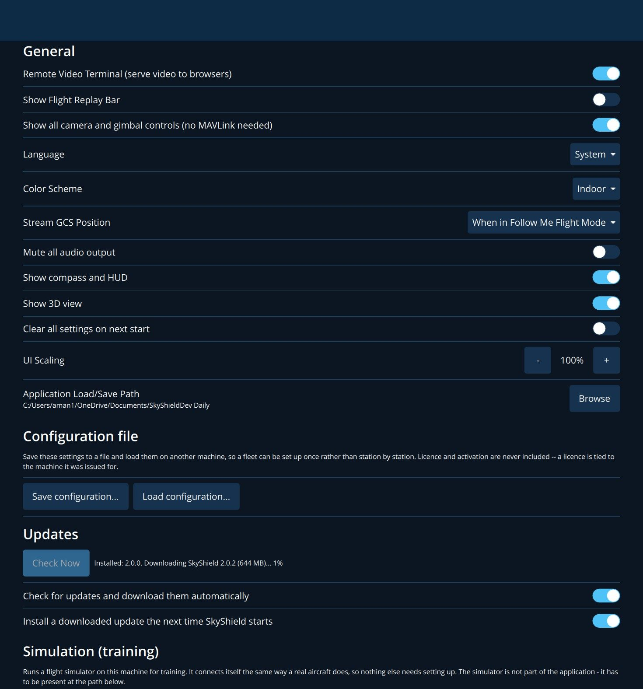
| Setting | Meaning |
|---|---|
| Remote Video Terminal (serve video to browsers) | The same switch as on the Video Terminal page (chapter 9). |
| Show Flight Replay Bar | Shows the replay bar (10.1). |
| Show all camera and gimbal controls (no MAVLink needed) | Keeps every camera and gimbal control visible without the hardware connected (4.4). |
| Language | Language of the application. |
| Color Scheme | Indoor (dark) or Outdoor. |
| Stream GCS Position | Whether the ground station sends its own position to the aircraft: never, always, or only in Follow Me flight mode. |
| Mute all audio output | Silences spoken messages and alerts. |
| Show compass and HUD | Shows the compass and attitude display (3.3). |
| Show 3D view | Makes the 3D view available (chapter 8). |
| Clear all settings on next start | Returns every setting to its default the next time SkyShield starts. |
| UI Scaling | - and + make all text and controls smaller or larger. |
| Application Load/Save Path | The folder where plans, logs, recordings and other files are kept. Browse changes it. |
| Configuration file | See 13.3. |
| Updates | See 13.1. |
| Simulation (training) | See 2.5. |
| Units | Units for horizontal distance, vertical distance, area, speed and temperature. |
11.2 Maps
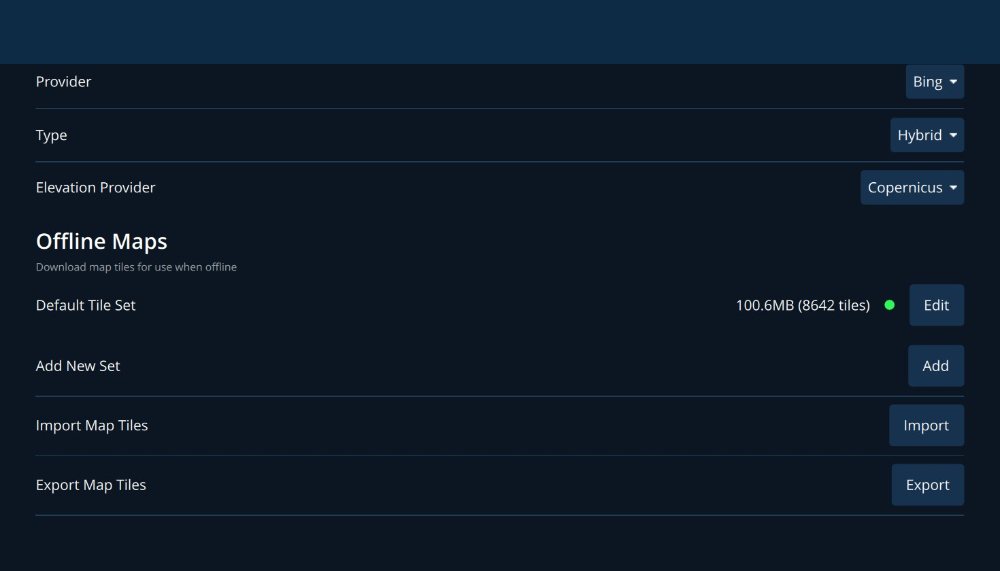
| Setting | Meaning |
|---|---|
| Provider, Type | The source of map imagery and its style, such as satellite, street or hybrid. |
| Elevation Provider | The source of terrain heights used for terrain altitude and the terrain check. |
| Default Tile Set | Map imagery saved automatically as you look around, with its size. Edit shows details. |
| Add New Set | Add downloads an area of your choice for use without internet. Select the area on the map and the zoom levels to keep. |
| Import / Export Map Tiles | Moves saved maps between computers. |
11.3 Application Settings
Open with Advanced > Application Settings. Pages are listed down the left side.
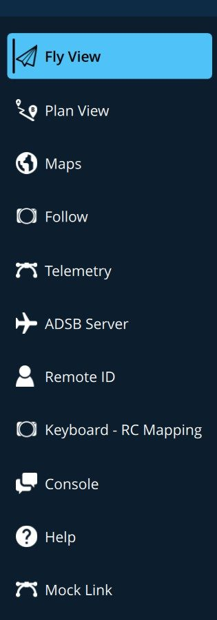
Fly View
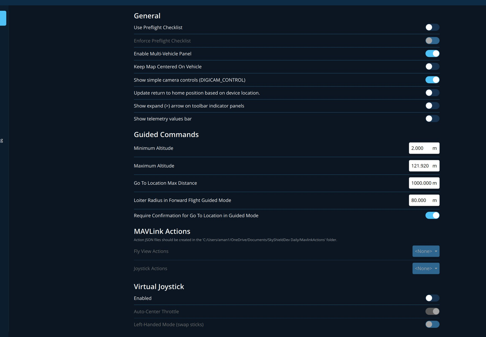
| Setting | Meaning |
|---|---|
| Use Preflight Checklist / Enforce Preflight Checklist | See 3.7. |
| Enable Multi-Vehicle Panel | Shows a panel for selecting and commanding several aircraft when more than one is connected. |
| Keep Map Centered On Vehicle | The map follows the aircraft. |
| Show simple camera controls | Shows photo controls for cameras that only accept a basic trigger command. |
| Update return to home position based on device location | Sends the ground station's position to the aircraft as its home. |
| Show expand (>) arrow on toolbar indicator panels | Adds an arrow to the toolbar drop-downs that reveals configuration options. Off by default to prevent accidental changes in flight. |
| Show telemetry values bar | Shows a bar of telemetry values at the bottom of the map: altitude, climb rate, ground speed, air speed or throttle, distance to home, flight time and flight distance. |
| Guided Commands: Minimum / Maximum Altitude | The range offered when changing altitude (2 m and 121.92 m unless changed). |
| Go To Location Max Distance | The farthest Go to location may send the aircraft. |
| Loiter Radius in Forward Flight Guided Mode | The circle a fixed-wing aircraft flies around a Go To point. |
| Require Confirmation for Go To Location in Guided Mode | Keeps the confirmation slider for Go To. |
| MAVLink Actions | Custom command buttons defined by your organisation. |
| Virtual Joystick | On-screen control sticks. |
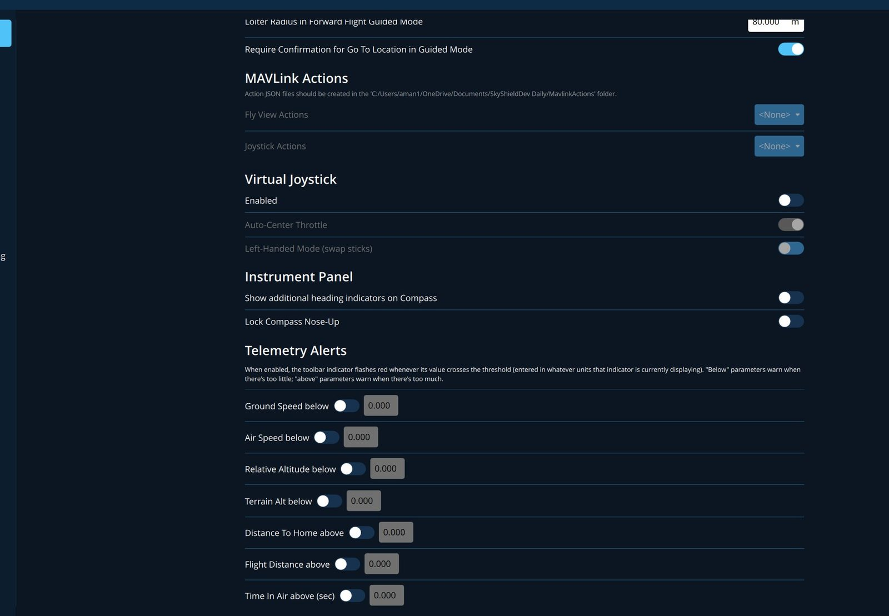
Telemetry Alerts. Each row has a switch and a limit. When the switch is on, the matching toolbar readout flashes red whenever the value crosses the limit. Ground Speed below, Air Speed below, Relative Alt below and Terrain Alt below warn when there is too little. Distance To Home above, Flight Distance above and Time In Air above (sec) warn when there is too much. Limits are in the units the readout is showing.
Plan View
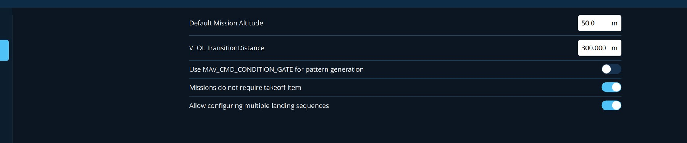
| Setting | Meaning |
|---|---|
| Default Mission Altitude | The altitude given to new waypoints (50 m unless changed). |
| VTOL TransitionDistance | The distance allowed for a VTOL aircraft to change between hover and forward flight. |
| Missions do not require takeoff item | Allows a mission that does not begin with a take-off. |
| Allow configuring multiple landing sequences | Allows more than one landing pattern in a plan. |
Maps (advanced)
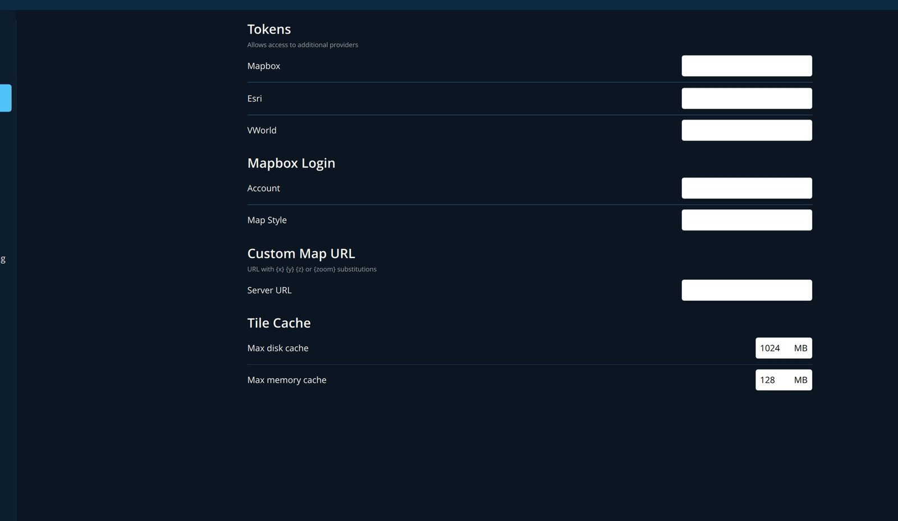
Access tokens for map providers that need an account, the address of a custom map server, and the size of the map cache on disk and in memory.
Follow
Gimbal follow. See chapter 6.
Telemetry
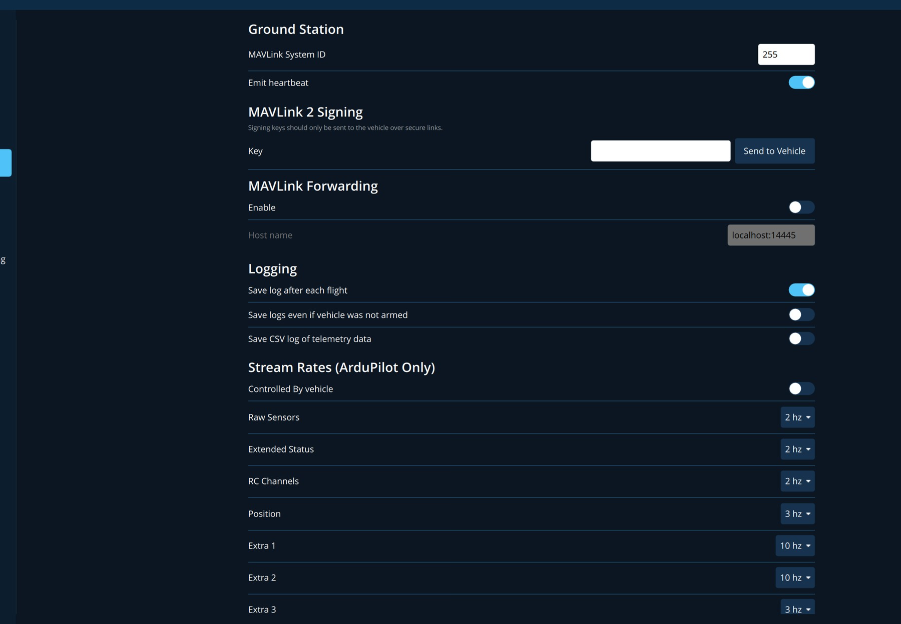
| Section | Meaning |
|---|---|
| Ground Station | The identity this ground station uses on the link, and whether it announces itself. |
| MAVLink 2 Signing | A key shared with the aircraft so that it accepts commands only from stations that hold it. |
| MAVLink Forwarding | Passes the aircraft's telemetry on to another computer. |
| Logging | Save log after each flight, whether to save when the aircraft was never armed, and whether to also save telemetry as a CSV file. |
| Stream Rates (ArduPilot Only) | How often the aircraft sends each group of data. |
ADSB Server and Remote ID
ADSB Server connects to a receiver that reports nearby crewed aircraft, which are then drawn on the map. Remote ID configures the identification broadcast that some regulators require, for aircraft fitted with a Remote ID module.
Keyboard - RC Mapping
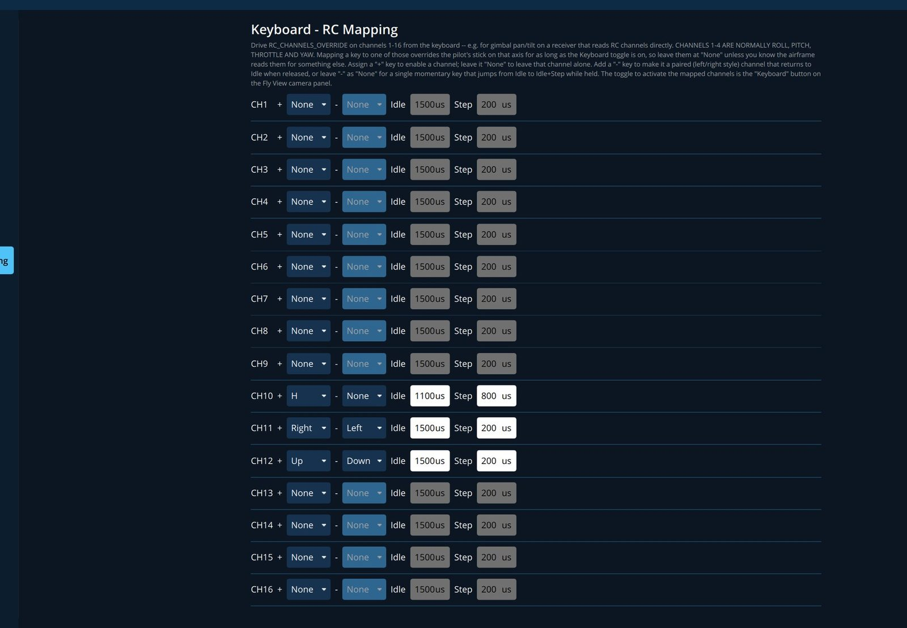
Lets keys on the keyboard drive radio channels, for example to steer a gimbal or operate a payload. For each of channels 1 to 16 choose a key that pushes the channel one way, optionally a key that pushes it the other way, the Idle value sent when no key is held, and the Step by which a held key moves it. Keyboard control acts only while Keyboard is on in the camera panel.
Console and Help
Console shows the application's own diagnostic messages. Save App Log writes them to a file to send to support. Help lists reference links.
12. Vehicle Configuration
Open with Advanced > Vehicle Configuration while an aircraft is connected. These pages set up the aircraft itself. Changes are stored in the autopilot.
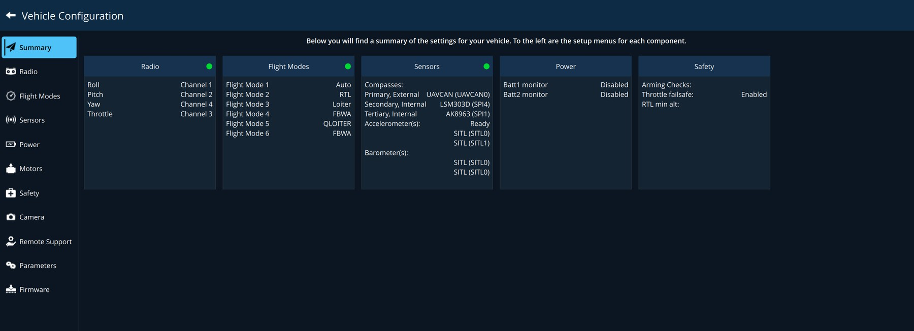
| Page | What it is for |
|---|---|
| Summary | One box per area, showing its main values and whether it needs attention. |
| Radio | Calibrating the radio control transmitter. |
| Flight Modes | Which mode each switch position selects. |
| Sensors | Calibrating the accelerometer, compass, level horizon and airspeed sensor. |
| Power | Battery monitoring. |
| Motors | Testing each motor. Remove propellers first. |
| Safety | What the aircraft does on low battery, lost link or a fence breach. |
| Camera | Gimbal and camera trigger outputs. |
| Parameters | Every setting in the autopilot, searchable. |
| Firmware | Loading autopilot firmware. |
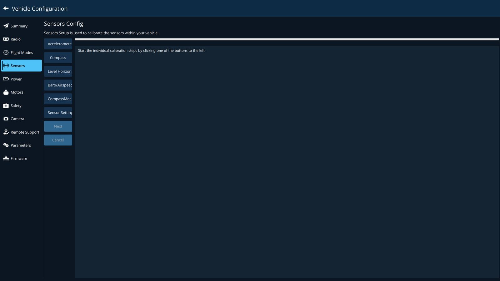
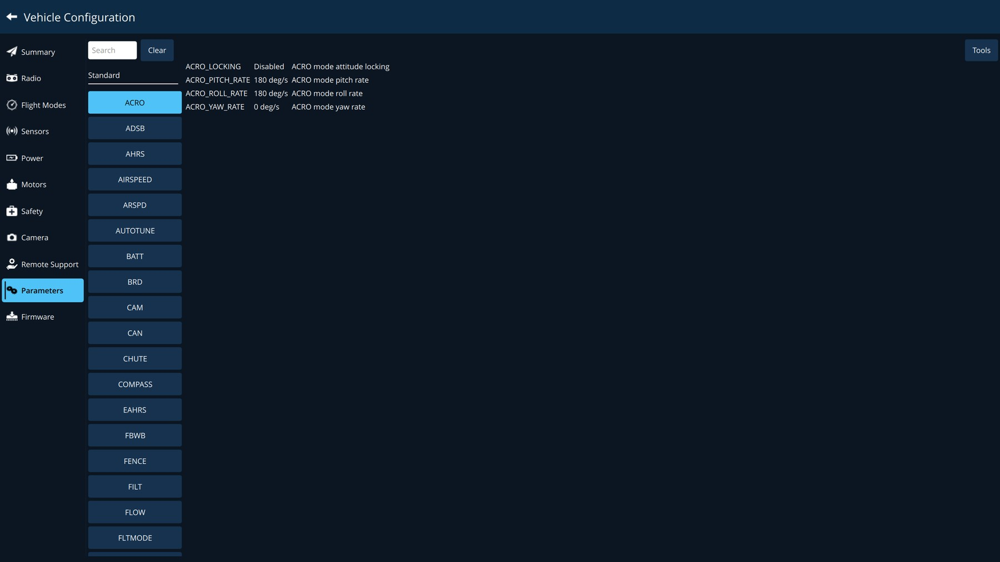
On the Parameters page, click a parameter to change it. Tools saves all parameters to a file, loads them from a file, or compares the aircraft with a file. Keep a saved copy of a known good configuration for every aircraft.
13. Updates, licence and configuration files
13.1 Updates
In General > Updates (Figure 11.1).
| Control | What it does |
|---|---|
| Status line | The installed version, then what the updater is doing: checking, up to date, downloading with a percentage, or ready. |
| Check Now | Looks for a newer version immediately. |
| Install Now | Appears when an update has been downloaded and verified. Closes SkyShield and installs it. |
| What's new | A short note about the downloaded version. |
| Check for updates and download them automatically | Downloads new versions in the background. An interrupted download resumes where it stopped. |
| Install a downloaded update the next time SkyShield starts | Installs at the next start, before anything is connected. |
- An update is never installed while an aircraft is armed. Install Now is refused until it is disarmed.
- A download is checked against the published size and fingerprint before it can be installed. A file that does not match is not installed.
- Updates are large (several hundred megabytes). On a metered connection, turn automatic download off and use Check Now when convenient.
13.2 Licence
Open Licence from the application menu. The page shows:
- The licence status in green when valid, with Licensed to, Expires and Features.
- A warning when the licence expires within 14 days.
- Device ID, with Save licence request… and Import licence… for renewing or changing a licence.
The features of a licence decide which parts of the AI layer run: detection, scene conditions, alerts and autonomous actions. A licence without AI features still gives the full ground station. If AI detection will not start although it is enabled, check here that the licence includes it.
13.3 Configuration files
General > Configuration file copies settings between ground stations so that a fleet is set up once.
- On the station that is set up as you want, click Save configuration... and choose where to save the file.
- On each other station, click Load configuration... and select the file.
- Restart SkyShield on that station for all settings to take effect.
Licence and activation are never included. Each station needs its own licence.
14. Use cases, step by step
14.1 A first flight, from power-on to landing
- Start SkyShield. Power the aircraft and its data link. Wait for the status to leave No Vehicle Connected and for parameter loading to finish.
- Read the toolbar: GNSS has a lock with a low HDOP, LINK is high, Drone Battery is full.
- Click the status. Read the vehicle messages and confirm the sensors show Normal.
- Check the video is showing and, if you use AI, that the AI status line has a green dot.
- Open Plan, build or load the mission, clear any red sections, and Upload (chapter 7).
- Back in the Fly View, complete the pre-flight checklist if it is in use.
- Choose Actions > Start Mission. Read the confirmation, check the area is clear, and slide.
- During the flight, watch altitude, distance to home, link and battery. Use Pause to hold and Actions > Continue Mission to resume.
- To end early, click Return and confirm.
- After landing, confirm the aircraft has disarmed, or click Disarm.
14.2 Searching for a missing person
Goal: cover an area and be told when a person, or a sign of one, comes into view.
- In AI Detection, turn on Enable AI detection. In Classes, tick Person and the vehicle types. Leave animals unticked.
- Set Bounding boxes to All objects. Choose an alert voice and make sure audio is not muted.
- In Plan View, trace or load the search area and use Auto Plan or a survey pattern to cover it. Choose terrain-relative altitude over hills. Check the route in 3D View.
- Fly the mission. Give the video most of the screen by dragging the divider.
- On an alert such as Person seen, Person not moving, Signs of someone camping or Ground signal, click Pause.
- Use Zoom and the gimbal to confirm. To keep the camera on the spot, click the location on the map and choose ROI at location.
- Choose Mark location on the map and read the coordinates to the ground team.
- Resume with Actions > Continue Mission.
14.3 Assessing a fire or a flood
- Enable AI detection as above. Consider Bounding boxes: Only critical objects, so that boxes appear only for people and vehicles inside an affected area.
- Fly towards the incident from upwind and at a safe height. Watch for Power lines and Mast or tower hazard alerts and Poor visibility.
- Read each alert's action text: Building on fire — Investigate for occupants, Road under water — Route may be impassable, People cut off by water — Investigate immediately.
- The count in the banner tells you how many people or vehicles are inside the affected area.
- Click Record to keep the footage and Photo for stills.
- Mark blocked roads and damaged bridges on the map for the teams planning access.
14.4 Giving the incident commander a live picture
- Open Video Terminal and turn on Enable Remote Video Terminal.
- With no site network, turn on Broadcast a Wi-Fi network for viewers. Have the commander scan 1. JOIN, then 2. WATCH.
- On the page, they choose Split to see video and map together.
- Confirm Viewers connected has gone up and Video reads Receiving from aircraft.
- For someone at headquarters, use a VPN and send them the link with Copy link.
- Turn the Video Terminal off at the end of the operation.
14.5 Keeping the camera on a moving vehicle
- Once, on the ground: set up Follow with the gimbal's channels, Dry run on, and confirm the direction of movement (chapter 6). Then turn Dry run off.
- In flight, click Track and drag a box around the vehicle.
- The gimbal keeps it centred. If the target is lost for longer than Stop after target lost, the gimbal is released and you select again.
- Click Track to stop.
14.6 Rehearsing at a desk
- In Payload Configuration, set Source to Local Video File and choose a recorded aerial video.
- In General, click Start Simulator.
- Plan, upload and fly a mission exactly as you would for real. Practise pausing, changing altitude, returning, and responding to alerts.
- Click Stop Simulator when done and set the video source back to your camera.
14.7 Reviewing a flight afterwards
- Turn on General > Show Flight Replay Bar.
- Pick the flight by aircraft, number and date, and press play.
- Watch the flight unfold on the map with the recorded video alongside.
- For a deeper look, download the aircraft's own log with Analyze Tools > Log Download.
14.8 Preparing for a site with no internet
- While connected, open Maps > Add New Set and download the operating area at the zoom levels you will use.
- Open Plan View over the area, and open the 3D view once, so that terrain for the area is stored.
- Check General > Updates and install any pending update now, not in the field.
- Check Licence for the expiry date.
15. Troubleshooting
| Symptom | Likely cause | What to do |
|---|---|---|
| Only an activation window opens | No valid licence for this computer | Follow 2.1. A licence from another computer will not work. |
| No Vehicle Connected | Link not powered, wrong port, or AutoConnect off for that link type | Check cables and power. Check Communication Link. |
| A message says parameters are missing from firmware | The aircraft's firmware version does not have a setting the page expects | Click Ok. Report it to whoever maintains the aircraft if it concerns a feature you use. |
| Aircraft will not arm | A pre-arm check is failing | Click the status and read the vehicle messages. |
| No video | Wrong source or address, or the camera has not started | Check Payload Configuration. |
| Several aircraft all have the same name | Their BRD_SERIAL_NUM is still 0, so they all use the ground station's board number | Set a different BRD_SERIAL_NUM on each aircraft (2.4) and reconnect. |
| An aircraft's video tile stays black | Wrong address, or several cameras on the same address | Check its row in Video per aircraft and give every camera its own address (4.3). |
| Video stutters or breaks up | Poor link, or the computer is overloaded | Raise Video buffer a little. Raise Detect every N frames. Close other programs. |
| Video is clearly delayed | Video buffer set high | Lower it. Do not fly on a delayed picture. |
| No AI status line on the video | AI is off | Turn on Enable AI detection and the AI button. Check the licence includes AI. |
| AI runs but never finds anything | Graphics chip returns empty results | Set Compute device to Processor (CPU). |
| Too many wrong boxes | Threshold too low, or unneeded classes ticked | Raise Confidence threshold. Untick animal classes. |
| Alerts are not spoken | Audio muted, or still inside the gap | Check Mute all audio output and Minimum gap between announcements. |
| Track does not move the gimbal | Follow not enabled, dry run on, or no channel chosen | See chapter 6. |
| 3D View button greyed out | 3D view not enabled | Turn on General > Show 3D view. |
| Video Terminal: the service could not start | Another program is using the port | Change Web page port. |
| Video Terminal: No video yet | The ground station is not receiving video | Normal before the camera starts. Fix the video on the ground station first. |
| Viewer page loads but stays black | The viewer cannot reach the ground station for video | Check the viewer is on the same network. Try another listed address. Reload the page. |
| Viewer picture is poor on the ground station's Wi-Fi | The Wi-Fi radio is also providing internet | Give the computer internet by cable or USB. |
| Yesterday's viewer link does not work | The access key changes each session | Share the new code or link. |
| Route drawn in red | The path meets the terrain | See 7.3. |
| Install Now refused | An aircraft is armed | Disarm first. |
When contacting support, include the SkyShield version (bottom of the application menu), a description of what you did and saw, the application log from Application Settings > Console > Save App Log, and for AI or Video Terminal problems the contents of the AILogs folder.
Appendix A. Alert reference
Severity runs from Info (for awareness) through Advisory and High to Critical (act now).
| Category | Alert | Guidance shown | Severity |
|---|---|---|---|
| PEOPLE | Person seen | One person visible | Info |
| PEOPLE | Group of people seen | Several people together | Advisory |
| PEOPLE | Person in water | Investigate immediately | Critical |
| PEOPLE | People cut off by water | Investigate immediately | Critical |
| PEOPLE | People close to fire | Investigate immediately | Critical |
| PEOPLE | Person not moving | Investigate - may be a casualty | High |
| PEOPLE | Person signalling | Investigate immediately | Critical |
| VEHICLE | Vehicle seen | Car, truck or bus | Info |
| VEHICLE | Vehicle in water | Investigate - occupants unknown | High |
| VEHICLE | Vehicle on fire | Investigate for occupants | High |
| VEHICLE | Vehicle overturned | Investigate for occupants | High |
| VEHICLE | Boat seen | Any small craft | Info |
| VEHICLE | Boat in trouble | Investigate immediately | High |
| FIRE | Fire seen | Investigate extent | High |
| FIRE | Smoke, no fire visible | Investigate upwind - source is out of frame | Advisory |
| FIRE | Building on fire | Investigate for occupants | High |
| FIRE | Fire spreading | Investigate - assess route risk | High |
| FLOOD | Flooding | Investigate extent and access | Advisory |
| FLOOD | Road under water | Route may be impassable | High |
| FLOOD | Buildings in water | Occupants may be cut off - investigate | High |
| FLOOD | Fast-moving water | Dangerous current | Advisory |
| ROUTE | Road blocked | Route constraint - verify before planning through | Advisory |
| ROUTE | Road washed away | Route constraint - verify before planning through | High |
| ROUTE | Bridge damaged | Crossing unsafe | High |
| DAMAGE | Building collapsed | Investigate - people may be underneath | Critical |
| DAMAGE | Building damaged | Standing but not intact | Advisory |
| SEARCH | Signs of someone camping | Investigate - someone may be here | Advisory |
| SEARCH | Vehicle parked away from a road | Investigate - someone may have set off on foot | Advisory |
| SEARCH | Tracks or a trail | Investigate - recent passage | Advisory |
| SEARCH | Wreckage | Investigate immediately | High |
| SEARCH | Ground signal | Investigate immediately | Critical |
| SEARCH | Debris floating on water | Investigate immediately | High |
| HAZARD | Power lines | Flight hazard - wires across the path | High |
| HAZARD | Mast or tower | Flight hazard - tall obstruction | Advisory |
| HAZARD | Other aircraft nearby | Flight hazard - deconflict | High |
| HAZARD | Clear ground to land on | Usable in an emergency | Info |
| ACTIVITY | Something changed since last pass | Compare with the previous flight | Advisory |
| ACTIVITY | Crowd forming | People gathering | Advisory |
| ACTIVITY | Crowd breaking up | People moving away quickly | Advisory |
| ACTIVITY | Vehicle convoy | Several vehicles travelling together | Advisory |
| ACTIVITY | Vehicles blocking a road | Checkpoint or deliberate obstruction | Advisory |
| ACTIVITY | Digging or earthworks | Ground being disturbed | Advisory |
| ACTIVITY | Several small boats together | Group of craft in one area | Advisory |
| INFO | Animals seen | Reported as animals, not people | Info |
| INFO | Emergency services on scene | Already attended - deconflict | Info |
| CONDITIONS | Poor visibility | Fog, haze or smoke over the area | Advisory |
| CONDITIONS | Landing area blocked | Obstruction where you intended to land | Advisory |
Appendix B. Glossary
| Term | Meaning |
|---|---|
| AMSL | Above mean sea level. |
| Arm / disarm | Armed, the motors can run. Disarmed, they cannot. |
| Autopilot | The flight computer on the aircraft. |
| EO / IR | Electro-optical (daylight) camera / infrared (thermal) camera. |
| Fence (geofence) | A boundary the aircraft is not allowed to cross. |
| GCS | Ground control station: this computer and SkyShield. |
| Gimbal | The stabilised mount that points the camera. |
| GNSS | Satellite positioning (GPS and similar systems). |
| HDOP | A measure of GNSS accuracy. Lower is better. |
| Home | The point the aircraft returns to, normally where it took off. |
| MAVLink | The language the ground station and the aircraft use to talk to each other. |
| Mission | A sequence of steps the aircraft flies by itself. |
| PWM | The signal value on a radio channel, in microseconds. 1500 is normally centre. |
| ROI | Region of interest: a point the camera is kept on. |
| RTL / Return | Return to launch: fly back to home. |
| RVT | Remote Video Terminal (chapter 9). |
| Telemetry | The data the aircraft sends about itself. |
| VTOL | An aircraft that takes off and lands vertically and cruises on a wing. |
| Waypoint | A position in a mission. |